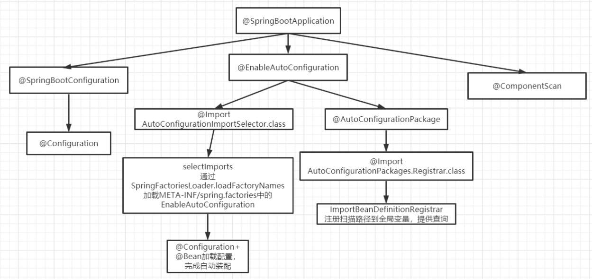
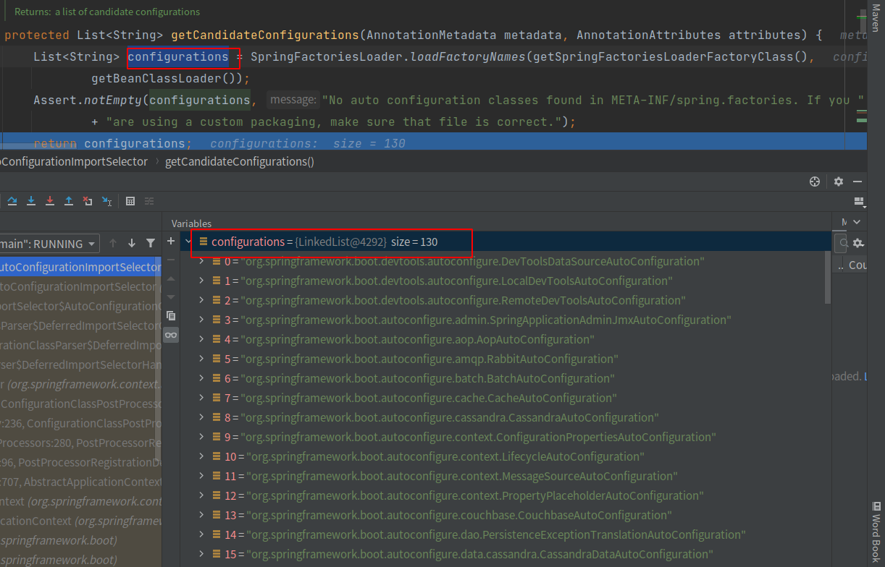
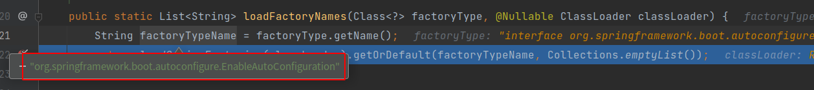
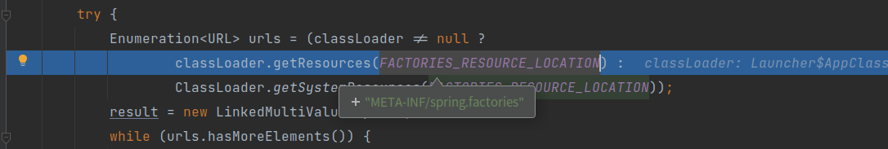
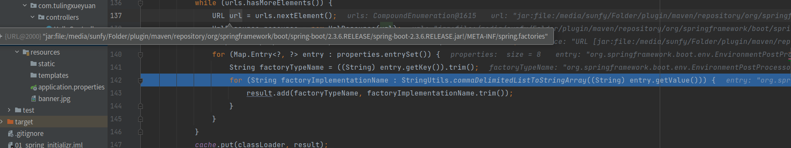

配置文件到底能写什么？怎么写？自动配置原理；
SpringBoot自动装配
@Import + @Configuration + Spring spi
自动配置类由各个starter提供，使用@Configuration + @Bean定义配置类，放到META-INF/spring.factories下 使用Spring spi扫描META-INF/spring.factories下的配置类 使用@Import导入自动配置类

源码查看入口
1
public SpringBootApplication
@SpringBootApplication: Spring Boot应用标注在某个类上说明这个类是Spring Boot的主配置类，Spring Boot需要运行这个类的main方法来启动Spring Boot应用；@EnableAutoConfiguration开启自动配置功能；自动扫描所有的配置类，扫描到并满足条件才会生效1
2
3
4
5
6
7(ElementType.TYPE)
(RetentionPolicy.RUNTIME)
(AutoConfigurationImportSelector.class)
public @interface EnableAutoConfiguration {@Import(AutoConfigurationImportSelector.class)SpringBoot实现自动配置的关键类1
2
3
4
5// 实现接口DeferredImportSelector（一个ImportSelector的变种，不会执行ImportSelector）
// 解析@Import(AutoConfigurationImportSelector.class)注解时，调用getAutoConfigurationEntry
public class AutoConfigurationImportSelector implements DeferredImportSelector, BeanClassLoaderAware,
ResourceLoaderAware, BeanFactoryAware, EnvironmentAware, Ordered {
// sunfy-AutoConf 自动配置重要入口AutoConfigurationImportSelector实现接口DeferredImportSelector，判断是否重写getImportGroup方法，如果没有重写selectImports返回一个数组，将数组中的完整类名注册为bean- 重写
getImportGroup方法，返回一个自定义的实现了DeferredImportSelector.Group的类
SpringBoot通过重写，返回自定义的
DeferredImportSelector.Group的类process中获取所有的配置并根据实际引入进行过滤
1
2
3
4
5
6
7
8
9
10
11
12
13
14
15
public void process(AnnotationMetadata annotationMetadata, DeferredImportSelector deferredImportSelector) {
Assert.state(deferredImportSelector instanceof AutoConfigurationImportSelector,
() -> String.format("Only %s implementations are supported, got %s",
AutoConfigurationImportSelector.class.getSimpleName(),
deferredImportSelector.getClass().getName()));
AutoConfigurationEntry autoConfigurationEntry = ((AutoConfigurationImportSelector) deferredImportSelector)
// sunfy-autoConf 获取所有的有效自动配置类
.getAutoConfigurationEntry(annotationMetadata);
// selectImports 方法中获取到的配置
this.autoConfigurationEntries.add(autoConfigurationEntry);
for (String importClassName : autoConfigurationEntry.getConfigurations()) {
this.entries.putIfAbsent(importClassName, annotationMetadata);
}
}getAutoConfigurationEntry获取所有有效自动配置类，进入方法1
2
3
4
5
6
7
8
9
10
11
12
13
14
15
16
17// sunfy-autoConf 获取所有的有效自动配置类
protected AutoConfigurationEntry getAutoConfigurationEntry(AnnotationMetadata annotationMetadata) {
if (!isEnabled(annotationMetadata)) {
return EMPTY_ENTRY;
}
AnnotationAttributes attributes = getAttributes(annotationMetadata);
// sunfy-autoconf 获取所有的配置类1XX个
List<String> configurations = getCandidateConfigurations(annotationMetadata, attributes);
configurations = removeDuplicates(configurations);
Set<String> exclusions = getExclusions(annotationMetadata, attributes);
checkExcludedClasses(configurations, exclusions);
configurations.removeAll(exclusions);
// sunfy-AutoConf 根据pom依赖中添加starter过滤出来的有效配置类
configurations = getConfigurationClassFilter().filter(configurations);
fireAutoConfigurationImportEvents(configurations, exclusions);
return new AutoConfigurationEntry(configurations, exclusions);
}getCandidateConfigurations中获取到SpringBoot项目中所有的Stater配置，总共有1xx多个
进入
getCandidateConfigurations方法中1
2
3
4
5
6
7protected List<String> getCandidateConfigurations(AnnotationMetadata metadata, AnnotationAttributes attributes) {
// sunfy-autoconf 加载所有配置文件，jar中可能都存在，都进行读取
List<String> configurations = SpringFactoriesLoader.loadFactoryNames(getSpringFactoriesLoaderFactoryClass(),
getBeanClassLoader());
Assert.notEmpty(configurations, "No auto configuration classes found in META-INF/spring.factories. If you are using a custom packaging, make sure that file is correct.");
return configurations;
}
loadFactoryNames
1 | public static List<String> loadFactoryNames(Class<?> factoryType, @Nullable ClassLoader classLoader) { |

loadSpringFactories
1 | private static Map<String, List<String>> loadSpringFactories( ClassLoader classLoader) { |

遍历每个jar包下的每个META-INF/spring.factories文件内容

getConfigurationClassFilter().filter(configurations)根据pom依赖中添加starter过滤出来的有效配置类至此所有的自动配置就全部获取到了

...
...
Copyright 2021 sunfy.top ALL Rights Reserved